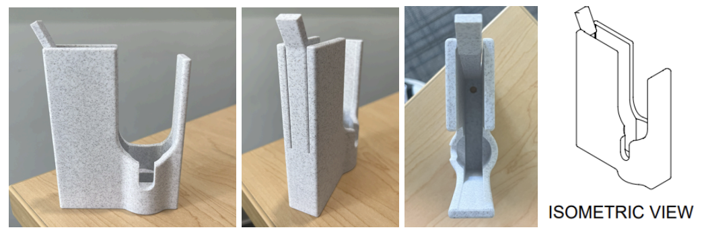
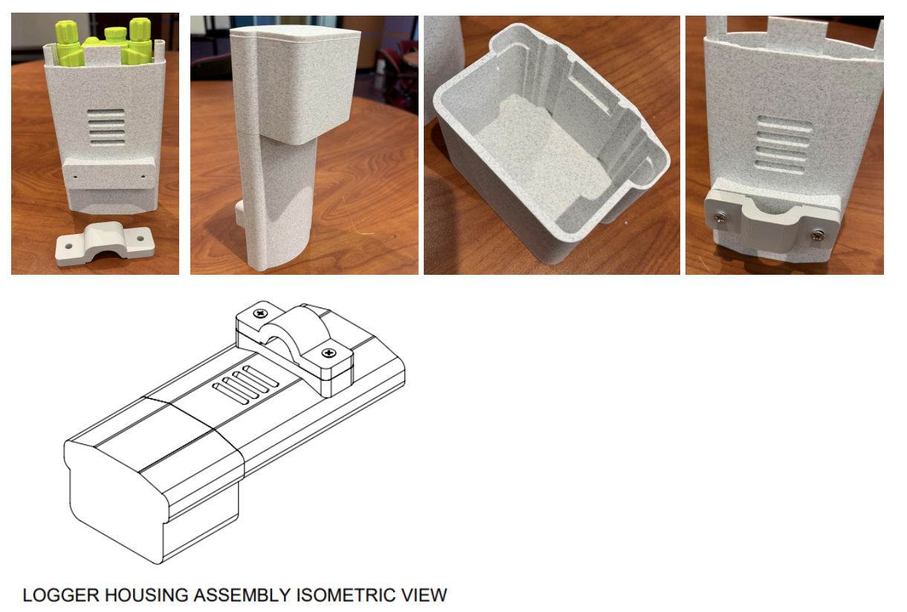

Logger and Sensor Enclosure
Our client is a professor at Harvey Mudd College who is researching desert plants. They are using the ICY PSY-1 Psychrometer to measure plant water potential in the desert conditions of Claremont, California. However, to effectively record data, psychrometers need their sensors to be protected from physical impacts, water, excessive heat, and animals to ensure the sensors are in a stable environment. This is because the sensor measures the vapor pressure in a small chamber gently clamped to an exposed portion of the plant’s stem (Thermocouple Psychrometry Archives - Environmental Biophysics, 2024). In order to store the data that the sensor collects, the sensor is attached via a wire to a logger, which stores the data on an SD card that researchers can remove to read the data. This logger also must be protected from extreme heat and from water, since both can damage the electronics, and heat can make the battery circuits break apart. The sensor alone would not be valuable if there were not also a way to collect and read the data it produces, so the logger is just as important to protect. The logger is attached to a branch or t-post, with wires connecting it to the sensor. The logger also needs to be easily accessible as the client needs to remove the SD card to obtain the data recorded. Proper protection of these sensors and loggers is important to gather accurate data so the client can better understand how plants adapt to ever-changing environments and climates.

